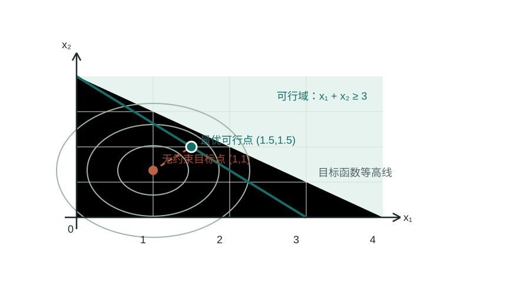

优化问题的数学表达
把一个模糊的“做得更好”，转化为变量、目标函数、约束和可行域。数学建模的第一步不是选择算法，而是明确究竟要决定什么。
先问：我们要决定什么？
优化不是“让所有东西都变好”的口号。它要求我们先选定一个可以比较的量：成本、时间、能耗、误差、风险，或这些量经过明确权衡后的组合。然后，我们要说明哪些决策可以改变，以及哪些现实条件不能被违反。
例如，配送公司要决定每辆车走哪条路线；制造工厂要决定每种产品生产多少；机器学习系统要决定模型参数。它们的应用背景不同，但都可以拆成四件事：
- 决策变量：我们可以控制的未知量。
- 目标函数：给每个决策方案一个可比较的数值。
- 约束：定义哪些方案在现实中允许出现。
- 数据与假设：成本、容量、需求、变量范围，以及模型忽略了什么。
核心判断：一个优化模型首先是对现实问题的抽象。算法只能求解你写下的模型，不能自动修复遗漏的成本、错误的单位或不合理的约束。
统一的数学形式
令决策向量为 ，其中每个分量代表一个决策。最常见的非线性优化形式是：
这里的符号有明确分工：
- 是标量目标函数；“最小化”表示希望它尽可能小。最大化问题可以通过最小化 转换。
- 表示等式约束， 表示不等式约束。本文统一采用 的符号约定；其他教材也常使用相反方向。
- 是约束索引集合，不是变量。
所有满足约束的点构成可行域：
因此，一个解不是任意让 很小的点，而是可行域中的点。若最小值确实被某个点取得，记为 ；“最优值存在”与“数值算法找到了一个近似点”是两件不同的事。
从现实问题走到模型
- 写出决策：变量应对应可以实际选择的量，并明确单位、维度和取值范围。
- 选定目标：决定比较的是总成本、误差还是多目标加权和。权重必须有业务或科学解释。
- 翻译限制：产能、守恒、预算、法规和逻辑条件分别变成等式、不等式或整数条件。
- 检查边界：变量是否允许为负？是否有上界？约束方向是否写反？单位是否一致？
- 验证模型：代入一个手算方案，检查目标值与每条约束是否符合现实含义。
一个模型可以写得很复杂，却仍然遗漏关键因素。比如只最小化行驶距离，却不计车辆容量、道路限行和时间窗，求出的路线可能在数学上可行、在现实中却不能执行。
二维例子：离目标最近的可行点
假设我们希望选择两个非负变量 和 ，它们越接近理想值 1 越好，但总量必须至少为 3。于是：

不考虑约束时，目标函数在 (1,1) 处为 0，但这个点不满足总量至少为 3 的要求。考虑约束后，最优点变为 (1.5,1.5)，目标值为 0.5。可以用柯西–施瓦茨不等式验证：令 、，则 ，且 ；等号在 u=v=0.5 时成立。
动手检查一个候选解
移动两个变量，观察目标值和可行性如何变化。目标值更小并不代表方案可用；必须先满足约束。
候选点检查器
Python：枚举一个小网格
下面的程序只为这个二维例子检查有限网格，不是通用优化器。它把连续空间离散化，因此结果精度受步长限制；本例的最优点恰好落在网格上。
"""Evaluate a small constrained optimization model by grid search.
This is a transparent teaching example, not a general-purpose optimizer.
"""
from math import isclose
def objective(x1: float, x2: float) -> float:
return (x1 - 1.0) ** 2 + (x2 - 1.0) ** 2
def feasible(x1: float, x2: float) -> bool:
return x1 >= 0.0 and x2 >= 0.0 and x1 + x2 >= 3.0
def grid_search(step: float = 0.05):
candidates = []
for i in range(81):
for j in range(81):
x1, x2 = i * step, j * step
if feasible(x1, x2):
candidates.append((objective(x1, x2), x1, x2))
return min(candidates)
if __name__ == "__main__":
value, x1, x2 = grid_search()
print(f"grid minimizer: ({x1:.2f}, {x2:.2f}), f={value:.4f}")
assert isclose(x1, 1.5, abs_tol=1e-9)
assert isclose(x2, 1.5, abs_tol=1e-9)
assert isclose(value, 0.5, abs_tol=1e-9)
建模时最容易混淆的事
- 目标值与可行性：不可行点即使目标值很低，也不能直接作为答案。
- 变量与参数：变量是要决定的量；参数是当前模型中给定的数据。把二者混淆会改变问题本身。
- 最小化与最大化：改变符号可以转换目标方向，但不能改变约束的物理意义。
- 最优解与最优值：多个决策可能达到同一个最优值；也可能只有下确界而没有可达到的最小点。
练习与参考
练习：把约束改为 ，并保留同一个目标函数。请先判断无约束理想点是否可行，再求新的最优点和目标值。
自检：理想点 (1,1) 不可行；由于目标关于两变量对称，最优点落在 x₁+x₂=1 上且两变量相等，即 (0.5,0.5)，目标值为 0.5。
- Jorge Nocedal, Stephen J. Wright, Numerical Optimization, 2nd ed., Springer, 2006，Chapter 1 “Introduction” 与 “Mathematical Formulation”。出版社书目与版本信息。